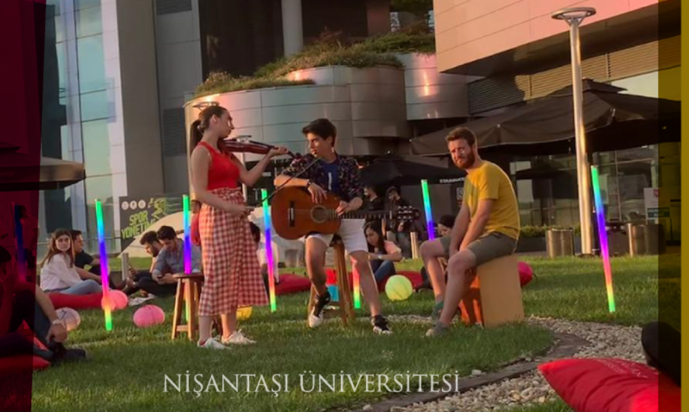

Biz hayatın, hayallerin ürünü olduğuna; hayallerin hedefleri, hedeflerin hayatı meydana getirdiğine inanan; işine kalbini de aklı kadar katan büyük bir aileyiz. Çıktısı bilim olan bir iş yapmanın gereği; farklı bakmanın, farklı görmenin, değişmenin ve değiştirmenin gücüne inanıyoruz. Bize dokunan her bir insanın hayatını, hedefleri ve hayalleri yönünde değiştirmek; önce çevremizi, sonra ülkemizi, ardından tüm dünyayı güzelleştirmek hedefiyle yürüyoruz. Bu yolda, öğrencilerimizi yalnızca derslere değil, hayata hazırlıyoruz; onlara sadece müfredatı değil, mesleklerini öğretiyoruz; hayatı teoride bırakmıyor, deneyimletiyoruz. Bir dünya üniversitesi olarak, yerel değerlerine sahip çıkan dünya insanları yetiştiriyoruz. Dört duvarla çevrili, kapalı bir eğitim kurumu değil, yüzü hayata, çevresine, tüm dünyaya dönük yaşayan ve her an nefes alan bir üniversiteyiz.
Nişantaşı Üniversitesi, Nişantaşı Eğitim ve Kültür Vakfı tarafından “Nişantaşı Meslek Yüksekokulu” olarak, 09.09.2009 tarih ve 24480 sayılı kuruluş kararının 17.09.2009 tarih ve 27352 sayılı Resmi Gazete’de yayımlanmasıyla yükseköğretim sistemine katılmış ve 10.10.2010 tarihinde de ön lisans eğitim-öğretimine başlamış bir vakıf yükseköğretim kurumudur. Nişantaşı Üniversitesi 31.05.2012 tarih ve 28309 sayılı Resmi Gazete’de yayınlanan Ek Madde 146’daki Kuruluş Kanunu ile İktisadi, İdari ve Sosyal Bilimler Fakültesi, Mühendislik Mimarlık Fakültesi, Sanat ve Tasarım Fakültesi, Fen Bilimleri Enstitüsü ve Sosyal Bilimler Enstitüsü üzerinden kamu tüzel kişiliğini kazanmış, Nişantaşı Meslek Yüksekokulu da Nişantaşı Üniversitesi’ne devir olmuştur. Üniversitemizin Nişantaşı Meslek Yüksekokulu (MYO) olarak ön lisans eğitimi vermeye başladığı 2010-2011 akademik yılında MYO’da 14, 2011-2012 akademik yılında 19, 2012-2013 akademik yılında 28, 2013-2014 akademik yılında 58, 2014-2015 akademik yılında 78, 2015-2016 yılında 82, 2016-2017 akademik yılında 97, 2017-2018 akademik yılında yine 97 programda eğitim verilmiştir. 2018-2019 yılında ise 84 programda eğitim verilmeye devam edilmektedir.
Daha fazla bilgi almak için tıklayınız. 